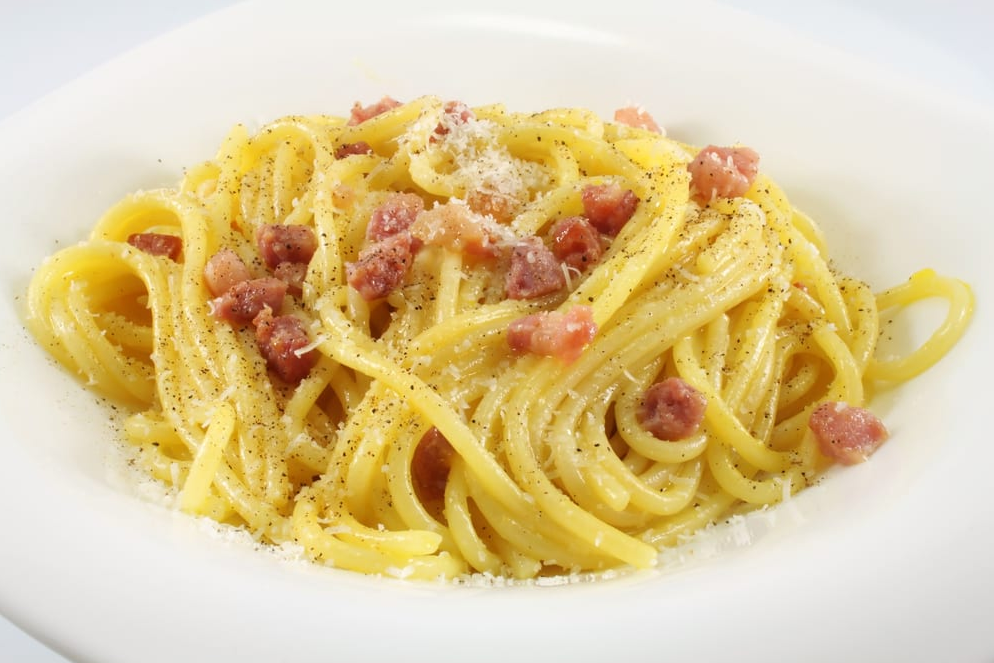

Spaghetti Carbonara

Description
Delicious and easy to make, the original pasta carbonara
from its italian origin. No cream, no extra toppings. The
classic dish with eggs, pancetta and parmesan cheese. Hope
you enjoy it!
Ingredients
For 4 people
- Spaghetti
- Pancetta (you can use bacon instead)
- Olive oil
- Two cloves of garlic
- 4 eggs
- Parmesan cheese
- Salt and pepper
- Butter (optional)
Steps
- Add a generous amount of salt to a pot filled with
water and bring it to a boil.
- Add your spaghetti to the water, close the lid (if you
have one) and let them sit until the water boils again.
After that, switch to medium heat and stir ocasionally.
- Add two smashed cloves of garlic and the diced pancetta
to a pan with a tablespoon of olive oil and let it cook
at medium heat.
- Once the garlic is brown, remove it - and give yourself a
chef's treat, if you want ;)
- For the sauce, throw a whole egg, three egg yolks and grated
parmesan cheese into a bowl. Add a pinch of pepper and a pinch
of salt and mix it all.
- Once the pancetta has a decent color, add the pasta to the pan
with a good amount of pasta water and remove the pan from the
heat.
- Add the sauce to the pan, and, optionally, a tablespoon
of butter for more creaminess. Mix it all.
- Finally, present the dish with some more parmesan cheese
and pepper on top, and you're done!
Go back